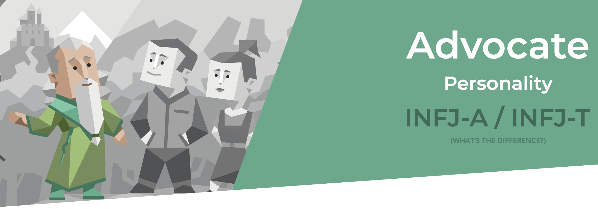

I interested in IT because IT has been affecting every aspect of our lives positively. It can make things easier to do, and in some cases, people do not even have to do it manually. The machines will do it automatically within a short amount of time. Besides, I also really into making apps that can benefit people to make life so much more comfortable in the long run. The event sparked my interest in IT was when I had an opportunity to see my brother playing video games on his laptop. I was fascinated by all the animations and colorful things that showed up just on a little screen. That is the moment that fired me to explore more about anything associated with Information Technology.
I choose to study at RMIT mostly because RMIT University has the top-notch facilities, and I also have a chance to study the equivalence degree of Melbourne’s program. Besides, the high percentage of being employed after graduation is also one of the main reasons.
I expect to learn the foundation about every facet of the IT industry, from basic concepts to soft-skills in the first semester. Therefore, when moving to the next semesters, I can figure out what aspect of the IT industry I think is interesting and can decide to learn in-depth about one (or two) specific area(s) to have a successful career in the IT industry after graduation.
My desired job in the future is the Senior Back-end Developer (PHP/Nodejs) of CONTEMI Vietnam. I want this job because it can give me a lucrative income and an opportunity to work overseas.
I have to graduate in the Computer fields and have at least five years of experience as a back-end developer (PHP, Nodejs). I have to have a good knowledge of distributed system architect/microservices and experience with search engines as Elasticsearch. I also have to be serious in following good design and best practices, and I must have working knowledge in source version control (GIT) and can communicate efficiently in English. In addition, having these following skill is a plus: have experience in developing SAAS systems (or equivalent large scale systems), DevOps experience with Amazon Web Services (AWS), and have experience in Customer Relationship Management (CRM) domain
At the moment, I have good English skills (8.0 IELTS) and have working knowledge in source version control (GIT)
First of all, I need to have general knowledge and learn about back-end developing systems and languages, specifically PHP in Web Programming (COSC2430) course in the third semester of the first year and Nodejs. After that, I can explore the distributed systems architect in the Distributed Systems (COSC2638) course in the first semester of the second year and search engines as Elasticsearch. In the second semester of the second year, I will learn more about Cloud, especially Amazon Web Services (AWS), in the Cloud Computing (COSC2638) course. In the final year, I will seek internships to help me have experience in the workplace, and I also will read more books about best practices and good design in programming such as the Clean Code of Robert Cecil Martin. After graduating, I will try to apply for an internship at that company, and try to do as best as I can to become an official employee and then reach that Senior position after five years.
The results of an online Myers-Briggs test: Advocate - INFJ (Introverted, Intuitive, Feeling, and Judging) - Quiet and mystical, yet very inspiring and tireless idealists.
The results of an online learning style test: Tactile learner
The result of an online Big Five Personality test: Measure on five major dimensions of personality (Openness, Conscientiousness, Extraversion, Agreeableness, and Neuroticism)
How do you think these results may influence your behavior in a team?
I think when working as a team, I will be a person that connects people as a real team, and I also be the one that encourages everyone to work to find out the most feasible solution to deal with the issues that we will face. I can also be a good role model to show good self-disciplined and work hard to achieve my goals. Therefore, I can inspire my teammates and make them become the best version of themselves. Moreover, I can be the one that they can talk to whenever they have any problems, not only about technical things but also about mental issues. Working as a team to me is not to do some assignments together to get a high mark, what I truly care is that what I can do to help them to become the better version of themselves and as a result, every member in my team can do their best, and we can together achieve our goals. I believe that the great team that is not all about having the most talented people, but it is about how well every member of a team collaborates. Every team member is a role model to help other teammates get out of their comfort zone and elevate themselves.
How should you take this into account when forming a team?
I want to find the person that has the same vision with me to form a team. Introvert or Extrovert or any personality is not an important thing. The most important is that they are more than willing to do everything to achieve our goals and share their issues or opinions so that a team can have more different views and choose the best one to tackle a problem.
These skills can be found and learn through some research on the Internet and academic books. Nevertheless, it will consume a very large amount of time to learn and master all these skills.